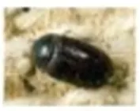
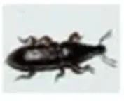
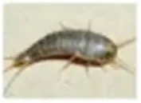
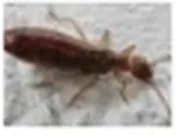
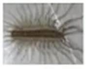

기타해충
| 생김새 | 크기 | 활동시기 및 서식장소 | 습성/생활 |
|---|---|---|---|
 애수시렁이 | 몸길이 3~5mm로 전체적으로 타원형 (몸빛깔은 전체가 검은색 또는 흑갈색이며 광택이 있다. ) | 딱정벌레목 수시렁이과의 곤충. 딱정벌레목 수시렁이과 유충으로 월동하고 성충은 맑고 따뜻한 날씨에 날아다님.몸빛깔 검은색또는흑색 털옷이나 비단, 누에고치 등이 있는 창고나 가공공장에 서식. 한국·일본·타이완에 분포 | 암컷은 400~900개의 알을 덩어리로 낳고 산란 후 약 10일이 지나면 부화한다.부화한 유충은 7~8회의 달피를 걸쳐 성장한다. 유충은 몸길이 약 9mm로 꼬리쪽으로 가면서 좁아지고 꼬리에는 길고 뻣뻣한 털이 무더기로 있으며 기문은 배에 있다. 보통 알에서 성충이 되는 데 걸리는 시간은 약 3개월이다. 성충과 유충 모두 털옷이나 비단, 누에고치 등을 먹이로 하므로 창고나 가공공장 등에서 볼 수 있는데 성충은 꽃에서도 볼 수 있다. 유충으로 월동하고 성충은 맑고 따뜻한 날씨에 날기도 한다. 한국·일본·타이완 등지에 분포한다. |
 쌀바구미 | 성충은 몸길이 3~4㎜이며 몸은 타원형 (더듬이는 방망이모양이고 8개의 마디로 되어 있다.) | 딱정벌레목 바구미과의 곤충. Sitophilus oryzae 딱정벌레목 바구미과 딱지날개 연노란색 쌀·보리·밀·수수·옥수수 등의 저장 곡물에 서식 전세계 분포 | 세대 일수는 연간 기온차에 따라 달라 7월 중순~8월 중순까지는 23~30일, 6월에는 35~40일, 5월과 9월 상순에는 약 50일, 4월과 9월 하순에는 약 60일이 소요되며, 발생 최성기는 7월 중순~8월 중순이다. 알은 낟알 속에서 부화해 어른벌레가 될 때까지 그 안에서 자라는데, 이 때부터 시작하여 알 밖으로 나와서까지 낟알을 갉아먹는다. |
 좀벌레 | 다리를 제외한 길이는 약 1센티미터 (더듬이는 긴 실처럼 생겼다.) | 설탕이나 녹말등의 탄수화물을 먹고 살기 때문에 saccharina라는 학명을 가지고 있다.이 벌레가 살 수 있는 바닥 타일이나 마루의 갈라진 틈이 있다면, 주로 냉장고 밑이나 따뜻한 화장실에서 벌레를 발견할 수 있을 것이다. 이 벌레는 책, 융단, 섬유 등을 좀먹는다. 얼룩좀은 더 따뜻한 곳에서 사는데, 대표적인 곳이 밀가루와 빵이 있는 빵집이다. | 매년 1회 발생하고 성충이 되기 전에 약 60번을 탈피하지만 변태는 하지 않아 유충과 성충의 겉모습이 크게 다르지 않다. 의류와 종이의 해충으로 질병을 매개하는 일은 드물다. 기둥 및 목재가구에 작은 구멍이 있거나 하얀 나무 가루가 있다면 좀이 쏠았을 가능성이 많으므로 구멍에다 살충제를 뿌리고 니스 등으로 구멍을 막는다. 한국에만 분포한다. |
 집게벌레 | 몸체의 길이는 1.3cm ~ 2,4cm | 몸체는 검은갈색이며, 머리부분은 붉은색이며, 더듬이는 누런갈색이다 후부에 두드러진 집게로 구별이 용이하다. 수컷의 집게는 구부러져있고 암컷의 집게는 곧다. 암컷은 흙속에 약30개의 알을 산란하며 계절에 따라 부화시기가 틀리다. 집게벌레 어미는 알보호에 대한 모성본능이 있다. 생활사는 1년정도 소요되고, 부패한 유기물이나 식물이 숙주이다. 오래된 종이나 판지 혹은 작은돌 틈에 많은 수가 숨어서 서식하며 야행이다. | 집게벌레는 질병을 매개하지 않으며, 개체수가 많지않고 도시지역의 거주공간이 아파트등으로 변화됨으로써 점차 서식공간이 사라져 사람과 접할 기회가 상대적으로 적어져 위생학적으로 큰 피해를 일으키지 않는다. 다만 목격했을때 외형으로 사람에게 혐오감을 주며, 집게로서 사람을 물기도 한다. |
 그리마 | 몸길이 약 22mm | 절지동물 그리마목 그리마과의 순각류(脣脚類). 그리마목 그리마과 부속지수 15개 (다리) 풀숲,인가지붕밑, 얕은 동굴 등에 서식. 한국·일본·타이완에 분포 징그럽게 생긴 외형으로 사람에게 혐오감을 줌 | 더듬이는 쉽게 구부러지고 10개 이상의 마디가 있다. 다리는 15쌍인데, 마디가 10개 이상이고 가늘고 길면서 탄력이 있다. 그리마는 곤충과 거미 따위를 먹고산다. 나방을 잡을 때는 높게 뛰어올라 잡아채기도 한다. 봄에서 가을에 걸쳐 알을 1개씩 낳아 진흙으로 싸서 땅 위에 둔다. 부화한 애벌레는 다리가 4쌍뿐이지만, 허물을 벗을 때마다 다리와 몸마디가 늘어난다. 다리가 15쌍이 된 뒤에도 허물을 계속 벗으면서 3년이 지나면 다 자란다. 적의 습격을 받으면 다리를 자르고 도망가며, 떨어져나간 다리는 다음 번 허물을 벗을 때 다시 생긴다. 삼림 풀숲이나 인가 지붕 밑, 얕은 동굴 등에 살며 동작이 재빠르다. |
애수시렁이
- 몸길이 3∼5mm로 전체적으로 타원형을 이루고 있다. 몸빛깔은 전체가 검은색 또는 흑갈색이며 광택이 있다.
- 머리는 둥글며 노란색 또는 갈색 털이 있고 머리꼭대기 중앙에 적갈색의 홑눈이 1개 있다. 촉각(더듬이)과 윗입술은 적갈색 또는 황갈색이고 양 수염은 황갈색이다. 수컷의 더듬이는 맨끝 3마디가 매우 굵은 편이고 마지막 마디가 특히 길어 앞의 열 마디를 합친 만큼의 길이이다.
- 앞가슴등판은 모자 모양이며 뒷가두리의 중앙과 뒷가두리각은 뒤쪽이 튀어나와 있다. 앞가슴등판도 노란색 또는 갈색 비늘털로 덮여 있다. 작은방패판은 긴 삼각형으로 전체적으로 작은 점무늬가 촘촘하고 황갈색의 짧은 털이 촘촘하다.
- 딱지날개(굳은날개)에도 작은 점무늬가 촘촘하고 노란색 털이 나 있다. 의 아랫면에는 금빛의 짧은 털이 촘촘히 있고 다리는 황갈색 또는 적갈색이다.
- 암컷은 400∼900개의 알을 덩어리로 낳고 산란 후 약 10일이 지나면 부화한다. 부화한 유충은 7∼8회의 탈피를 걸쳐 성장한다. 유충은 몸길이 약 9mm로 꼬리쪽으로 가면서 좁아지고 꼬리에는 길고 뻣뻣한 털이 무더기로 있으며 기문은 배에 있다. 보통 알에서 성충이 되는 데 걸리는 시간은 약 3개월이다.
- 성충과 유충 모두 털옷이나 비단, 누에고치 등을 먹이로 하므로 창고나 가공공장 등에서 볼 수 있는데 성충은 꽃에서도 볼 수 있다. 유충으로 월동하고 성충은 맑고 따뜻한 날씨에 날기도 한다. 한국·일본·타이완 등지에 분포한다.
쌀바구미
- 어른벌레의 딱지날개(굳은날개)에는 4개의 연노란색 반점이 있으며 특히 수컷 어른벌레의 경우 등에 세로로 우둘투둘 얽은 자국이 많은 것이 특징이다. 머리는 평평하고 주둥이에는 점무늬로 이루어진 줄이 있다. 수컷의 주둥이는 짧고 뭉뚝하며 등은 거칠고 광택이 없지만, 암컷의 주둥이는 가늘고 길며 등은 매끈매끈하고 광택이 있다. 더듬이는 주둥이의 기부에서 출발하며 갈색이다.
- 딱지날개의 날개 밑은 직선이고 점무늬가 촘촘히 있으며 세로홈이 있다. 홈과 홈 사이는 좁다. 어깨부분의 뒤쪽과 날개 끝 근처에는 1개의 어두운 붉은색 무늬가 있다. 몸의 등면에는 짧은 털이 드물게 나 있다.
- 낟알 속에서 겨울나기를 하며 기온이 13℃가 되면 활동을 시작하나 활동하기에 가장 알맞은 온도는 28∼29℃이다. 40℃가 되면 활동을 멈추고 -20℃ 이하이거나 60℃ 이상에서는 죽는다. 어른벌레는 낟알에서 나와 3∼4일이 지나면 짝짓기를 시작한다. 암컷은 낟알에 구멍을 뚫고 대개 한 구멍에 1개씩 알을 낳으며 끈적끈적한 물질을 분비해 구멍을 막는데, 때로는 2∼3개씩 낳는 경우도 있다. 알의 개수는 알을 낳는 시기에 따라 약간 다르나 암컷 1마리가 300∼500개의 알을 낳는다.
- 1세대 일수는 연간 기온차에 따라 달라 7월 중순~8월 중순까지는 23~30일, 6월에는 35~40일, 5월과 9월 상순에는 약 50일, 4월과 9월 하순에는 약 60일이 소요되며, 발생 최성기는 7월 중순~8월 중순이다.
- 알은 낟알 속에서 부화해 어른벌레가 될 때까지 그 안에서 자라는데, 이때부터 시작하여 알 밖으로 나와서까지 낟알을 갉아먹는다.
- 어른벌레와 애벌레는 딱딱한 먹이를 즐기는 습성이 있어서 쌀·보리·밀·수수·옥수수 등의 저장 곡물에 피해를 끼치지만 가루 식품에서는 살지 못한다. 피해를 입은 곡물은 양적 손실뿐 아니라 낟알 안에서 자라고 있는 애벌레의 호흡으로 인해 수분이 높아지고 열이 발생해 변질·부패되어 질적으로 품질이 떨어진다. 어른벌레는 어두운 곳을 좋아해 햇빛을 피하는 습성이 있다.
좀벌레
- 서양좀벌레는 민첩하고 빛을 싫어하며 날개가 없는 곤충이다. 설탕이나 녹말등의 탄수화물을 먹고 살기 때문에 saccharina라는 학명을 가지고 있다. 다리를 제외한 길이는 약 1센티미터이다. 더듬이는 긴 실처럼 생겼다. 금속성의 빛나는 몸은 세 번째 허물을 벗은 뒤에 나타나는 은색의 비늘 때문이다.
- 성체로 자라기 위해서는 최소한 4개월이 걸리며 주위 환경에 따라 3년까지도 걸린다. 상온에서는 1년 안에 다 자란다. 수명은 2년에서 8년 사이이다. 수명을 모두 채우는 개체는 약 8번 허물을 벗지만, 일년에 4번까지 허물을 벗기도 한다. 암컷은 온도가 섭씨 25도에서 30도 사이일때, 되도록 갈라진 틈 속에 100개 정도의 알을 낳는다. 차갑고 건조한 환경에서는 번식을 하지 못한다.
- 서양좀벌레가 좋아하는 먹이는 풀, 책의 장정, 사진, 설탕, 머리카락, 비듬, 그리고 먼지등에 들어있는 덱스트린같은 다당류나 녹말이다. 하지만 솜, 리넨, 비단과 합성섬유, 심지어 죽은 곤충의 몸이나 자신의 허물도 마다하지 않는다. 기아 상태에서는 가죽제품과 합성섬유로 만들어진 직물마저 망친다. 하지만 서양좀벌레는 아무 피해 없이 여러 달동안 굶을 수 있다.
- 얼룩좀(Thermobia domestica)과 비슷하게, 서양좀벌레는 사람의 거주지에서 나타난다. 이 벌레가 살 수 있는 바닥 타일이나 마루의 갈라진 틈이 있다면, 주로 냉장고 밑이나 따뜻한 화장실에서 벌레를 발견할 수 있을 것이다. 이 벌레는 책, 융단, 섬유 등을 좀먹는다. 얼룩좀은 더 따뜻한 곳에서 사는데, 대표적인 곳이 밀가루와 빵이 있는 빵집이다. 야행성 때문에 서양좀벌레의 교미 과정은 최근에 알려졌다. 교미 과정동안 수컷과 암컷은 흥분하여 돌아다닌다. 수컷은 얇은 천 같은 것으로 싸여 있는 정액 캡슐인 정협(spermatophore)을 내어 놓고, 암컷은 이것을 집어 수정을 한다.
- 흔히 해충이라고 생각하는 벌레이지만, 인간에게 끼치는 해악은 무시할 정도이다. 하지만 벌레를 싫어하는 사람들에게는 정신적 고통을 줄 수 있다. 서양좀벌레는 높은 습도와 틈새가 있는 곳에 산다. 이 두 가지 조건이 사라지면 서양좀벌레도 사라진다. 다음 방법들을 통해 잠시동안이지만 서양좀벌레를 없애거나 수를 줄일 수 있다.
- 보락스와 설탕을 1:1로 섞은 것은 유용한 미끼가 된다. 염화암모늄 용액의 냄새는 하루 동안 서양좀벌레를 접근하지 못하게 한다. 서양좀벌레를 잡으려면 축축한 흰 솜 위에 회반죽을 뿌리고 그것을 밤동안 은신처에 가까운 구석에 놔둔다. 서양좀벌레를 잡는 또다른 유용한 방법은 감자를 갈아서 밤동안 은신처 앞 바닥에 놓아두는 것이다. 그러면 서양좀벌레는 감자를 먹기 위해 속으로 들어간다. 다음날 아침에 감자를 통째로 버리면 된다.
집게벌레
- 몸체는 검은갈색이며, 머리부분은 붉은색이며, 더듬이는 누런갈색이다 후부에 두드러진 집게로 구별이 용이하다. 몸체의 길이는 1.3cm ~ 2,4cm정도이다. 수컷의 집게는 구부러져있고 암컷의 집게는 곧다. 암컷은 흙속에 약30개의 알을 산란하며 계절에 따라 부화시기가 틀리다. 집게벌레 어미는 알보호에 대한 모성본능이 있다. 생활사는 1년정도 소요되고, 부패한 유기물이나 식물이 숙주이다. 오래된 종이나 판지 혹은 작은돌 틈에 많은 수가 숨어서 서식하며 야행이다
- 집게벌레는 질병을 매개하지 않으며, 개체수가 많지않고 도시지역의 거주공간이 아파트등으로 변화됨으로써 점차 서식공간이 사라져 사람과 접할 기회가 상대적으로 적어져 위생학적으로 큰 피해를 일으키지 않는다. 다만 목격했을때 외형으로 사람에게 혐오감을 주며, 집게로서 사람을 물기도 한다
그리마
- 몸빛깔은 파란빛을 띤 쪽빛, 잿빛을 띤 노랑, 검은 갈색 등이다. 몸은 머리와 몸통으로 나뉘고 100개 이상의 작은 몸마디가 있다. 머리에는 1쌍의 긴 더듬이와 200개의 육각형 눈이 모인 원시적인 1쌍의 겹눈이 달려있다. 몸통은 막대모양이다. 몸통에는 8개의 등판이 있는데, 제8·9몸마디의 등판은 합쳐져서 특히 크다. 등판 뒷가장자리 가운데에 기문이 존재한다.
- 더듬이는 쉽게 구부러지고 10개 이상의 마디가 있다. 다리는 15쌍인데, 마디가 10개 이상이고 가늘고 길면서 탄력이 있다. 그리마는 곤충과 거미 따위를 먹고산다. 나방을 잡을 때는 높게 뛰어올라 잡아채기도 한다. 봄에서 가을에 걸쳐 알을 1개씩 낳아 진흙으로 싸서 땅 위에 둔다.
- 부화한 애벌레는 다리가 4쌍뿐이지만, 허물을 벗을 때마다 다리와 몸마디가 늘어난다. 다리가 15쌍이 된 뒤에도 허물을 계속 벗으면서 3년이 지나면 다 자란다. 적의 습격을 받으면 다리를 자르고 도망가며, 떨어져나간 다리는 다음 번 허물을 벗을 때 다시 생긴다. 삼림 풀숲이나 인가 지붕 밑, 얕은 동굴 등에 살며 동작이 재빠르다.
- 그리마는 주로 여름과 가을 사이 사람의 집에 들어온다. 먹이를 구하거나 겨울을 나기 위해서 집에 침입하는 것으로 추측된다.